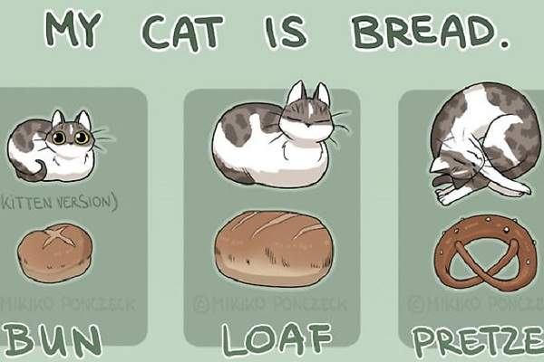

El gato
El gato doméstico (Felis silvestris catus), llamado popularmente gato, y de forma coloquial minino, michino, michi, micho, mizo, miz, morroño o morrongo, entre otros nombres, es un mamífero carnívoro de la familia Felidae.
Es una subespecie domesticada por la convivencia con el ser humano. El nombre actual en muchas lenguas proviene del latín vulgar catus.
Paradójicamente, catus aludía a los gatos salvajes, mientras que los gatos domésticos, en latín, eran llamados felis.
Enlace Wikipedia
Gráficos
Este gráfico demuestra que tu gato se parece a varios tipos de pan.
 Leer másFelis catus
Promedio de vida: 2 – 16 años (En libertad)
Periodo de gestación: 58 – 67 días
Cantidad diaria de sueño: 12 – 16 horas
Familia: Felidae
Masa Corporal: 3,6 – 4,5 kg (Adulto)
Alimentación
El gato es un carnívoro, en su alimentación son indispensables los nutrientes de origen animal, su metabolismo necesita una gran cantidad de proteínas y grasas procedentes tanto de carne como de pescado..
Tipos de alimentación...Adaptación
Felis silvestris

El gato montés, también conocido como gato salvaje o, más formalmente, como gato montés euroasiático, es una especie de mamífero carnívoro salvaje de la familia de los félidos y que habita en Eurasia y África